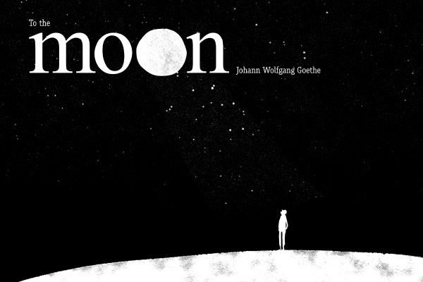

To the Moon

BUSH and vale are filled by thee
With a silver haze,
And my soul thou hast set free
With thy soothing rays.
And thy gentle beams descend
Kindly where I go,
Like the mild eye of a friend
On my joy and woe.
Echoes of the times gone by
Tremble through my heart,
‚Twixt delight and grief I ply,
Evermore apart.
Dearest river, flow, oh flow!
Joy cannot abide.
Play and kisses vanished so,
Faithfulness beside.
Once - oh, could I but forget!
It was mine: the rare!
And it is a torture yet
Memories to bear.
River, flow the vale along,
Without rest or ease,
Murmur, whisper to my song
Gentle melodies!
Swelling in the winter night
With thy roaring flood,
Bubbling in the spring's delight
Over leaf and bud!
Blessed is he who walks apart,
Though no hate he bears,
Holds a friend within his heart;
And with him he shares
All that steals, by men unguessed,
Or by men unknown,
Through the maze of his own breast
In the night alone.
- Johann Wolfgang von Goethe